2D Plate with a Hole
Now that we have covered some fundamentals and learned how to operate within Abaqus/CAE, let’s start with a simple example: a plate with a hole, as shown in Figure 1.
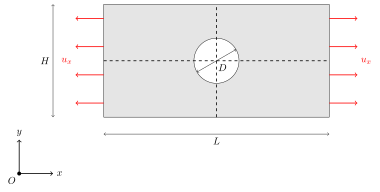
| ⚙️ Parameter | 📏 Value |
|---|---|
| Plate length, \(L\) | 100 mm |
| Plate height, \(H\) | 20 mm |
| Hole diameter, \(D\) | 10 mm |
The first step is to set up the working directory. After opening Abaqus, either manually select the working directory from the top of the GUI or open the command prompt in the desired folder and type:
abaqus cae
After that, in the Start Session dialog, choose Standard/Explicit Model to begin.
Figure 2 shows the initial window of Abaqus/CAE.
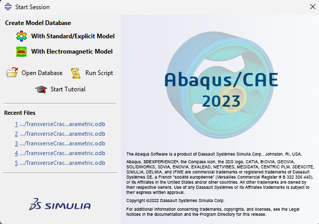
The first step of any model is defining the geometry.
In the Part module, select:
This means we are creating a 2D deformable part using the Shell option, which defines an area. If we had chosen Wire instead, we would have created a 1D part (for example, a truss).
A common source of confusion is the difference between the 3D shell and 2D planar options. When you are modelling a Part they can look almost the same, but they are fundamentally different. A 3D shell is a shell or plate embedded in full 3D space, so out-of-plane behaviour is included and you work with shell sections and shell elements. A 2D planar model, on the other hand, is truly two-dimensional (plane stress/plane strain or axisymmetric), and there you use solid sections and continuum elements instead.
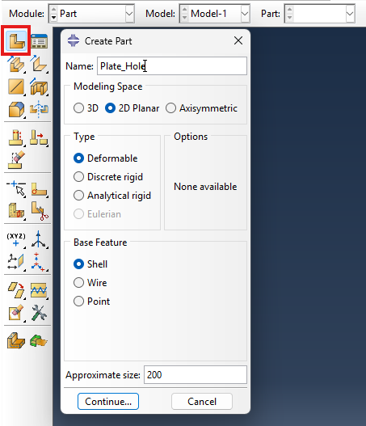
First, select the 🟦 rectangle tool (Create Lines: Rectangle (4 Lines)) and draw it roughly at the center. Next, add horizontal and vertical construction lines through the midpoint of the sketch. These construction lines serve as auxiliary references and do not form part of the geometry.
At this point, your sketch should look similar to Figure 4.
Now, add a circular hole at the center by selecting the circle tool and clicking in the middle of the plate. Ensure the sketch forms a closed contour - Abaqus requires closed profiles for part creation. Open profiles will cause an error.
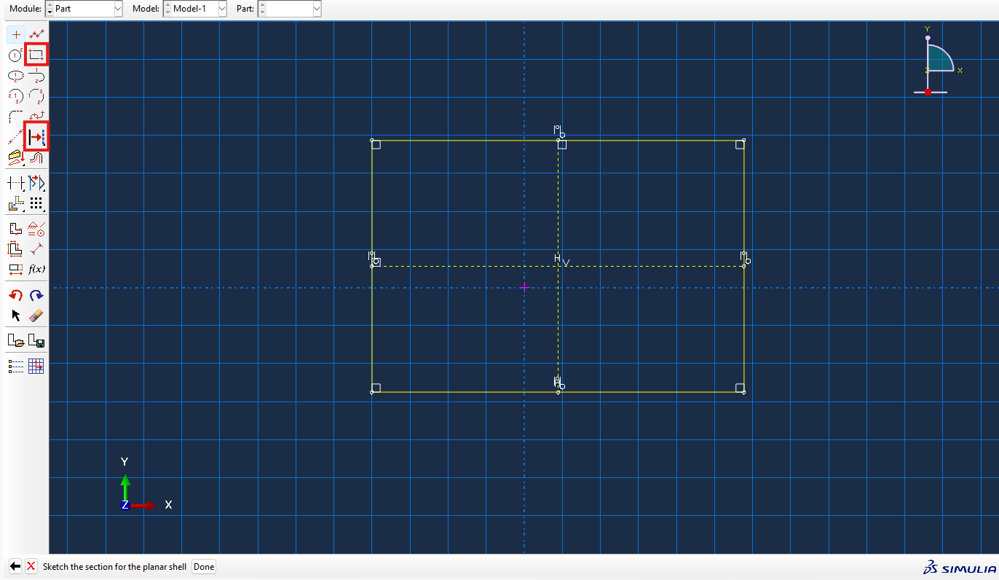
Next, apply the dimensions according to Table 1.
Use the dimension tool (second column, fourth row) from the sketch toolbar.
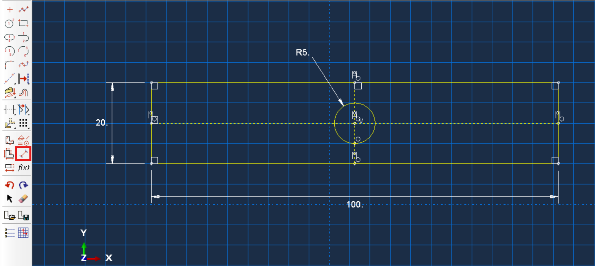
Finally, center the sketch at the origin. Create a point at \((0,0)\), apply the Fixed constraint to it, and then use the Coincident constraint to align the circle center with this point.
When a sketch is fully defined, all lines appear green (see Figure 6). If it becomes overdefined ⚠️ (e.g., due to conflicting constraints), the lines turn yellow and the conflicting constraints appear in purple.
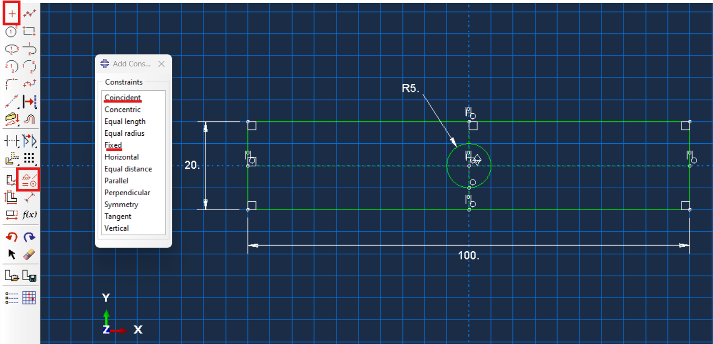
Press Done ✔️ at the bottom of the sketch window to create the part.
At this point, you have your part created inside the Part module, as shown in Figure 7. With this, the geometry section of the model is complete.
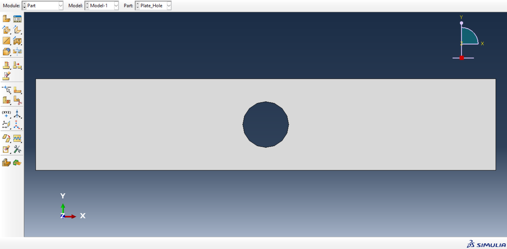
In Abaqus, material properties are defined within the Property module. So let’s create a PMA material with the following elastic properties (isotropic): \(E=3 \; \text{GPa}\) ; \(\nu = 0.4\). For this we are going to create a material and then select:
\[\text{Mechanical} \; \rightarrow \; \text{Elasticity} \; \rightarrow \; \text{Elastic}\]as shown in Figure 8. Then, select “Isotropic” (as shown in Figure 9) as the type and insert the young’s modulus and the poison coefficient. Pay attention to the units ⚠️! Since we are working in millimeters (mm) and newtons (N), our elastic properties must be in megapascals (MPa) to maintain dimensional consistency 📏.
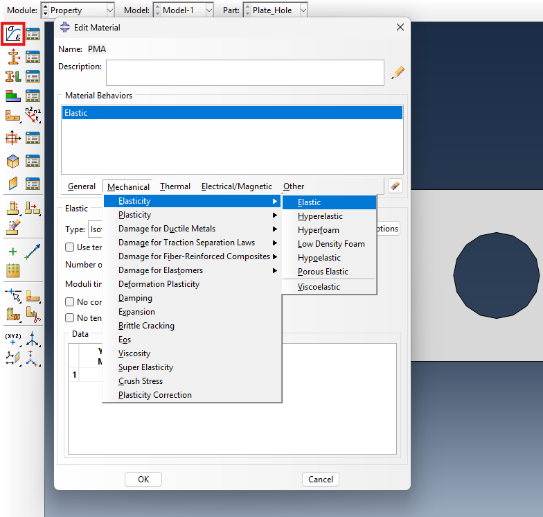
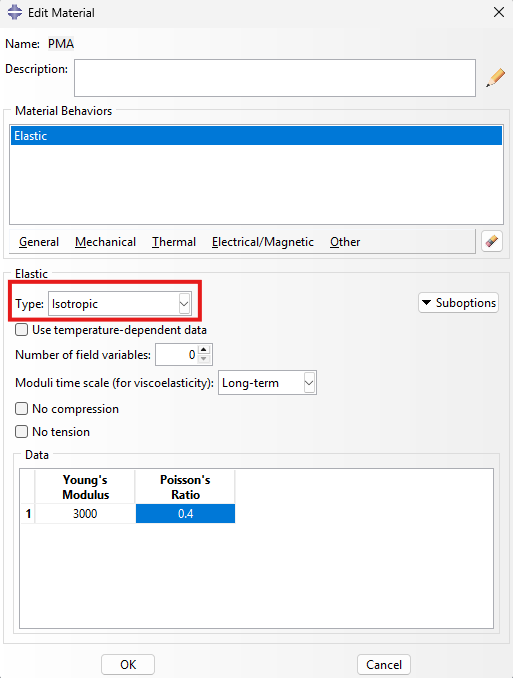
The second step is defining a section. A section is, in essence, the middle layer between the material definition and the geometry. While the material defines how a material behaves, the section specifies how that material will be represented or simplified in your model. For instance, with the same material, you could create a solid, shell, or beam section - each producing different structural behaviors depending on the modeling assumptions. So even if this feels a bit abstract now, it’s enough to remember that the section combines both the material and the modeling approach. Every element in your model must be assigned a section, and this step ensures that Abaqus knows how to interpret the material response of your geometry.
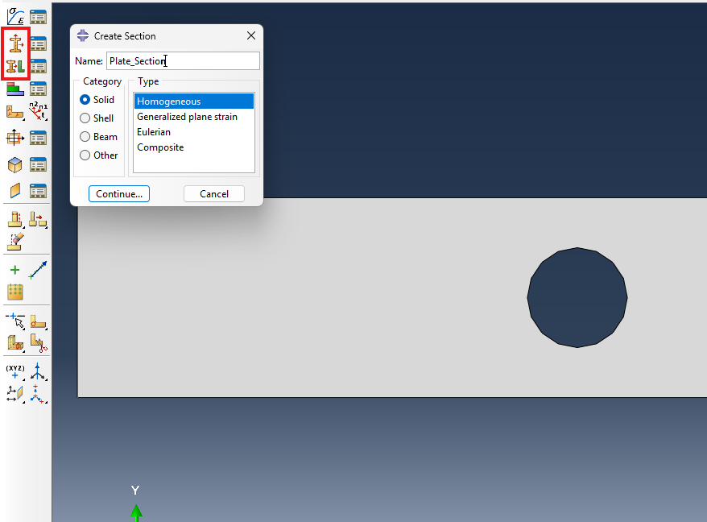
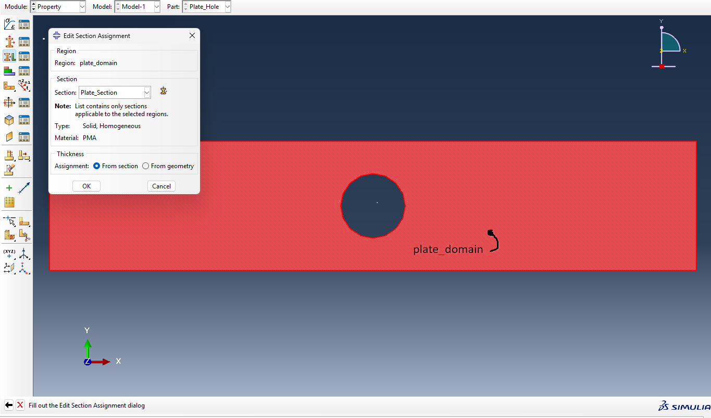
Moving on to the assembly and mesh steps. The assembly module represents what the solver actually sees . You might create several parts in the Part module, but only those you instantiate in the assembly will be used for simulation. Even if you have just one part, you still need to create an assembly instance of it. you’re essentially telling the solver: “here’s the part I want to analyze.
To do this, create an Instance. An instance is a placed copy of a part within the assembly. You can have multiple instances of the same part, for example, a connection with 10 identical bolts can be modeled using one bolt geometry and section, but repeated as multiple instances.
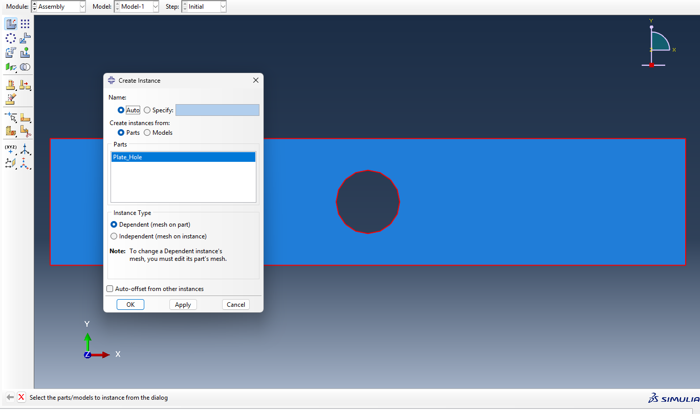
When creating an instance, Abaqus will ask whether it should be dependent or independent. A dependent instance means the mesh is created at the part level, while an independent instance allows meshing at the assembly level.
The distinction mainly affects how nodes and elements are numbered:
In an independent instance, all nodes and elements share a global numbering system across the entire assembly (no duplicates).
In a dependent instance, each part maintains its own numbering (so, for example, Element ID = 1 could exist in multiple parts).
The conceptual difference is shown in Figure 13.
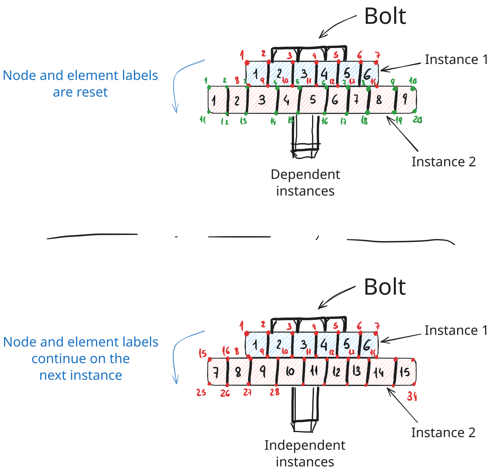
For this example, we’ll keep things simple and use a dependent instance . Once the instance is created, we can leave the Assembly module and move to the Mesh module.
Now, onto the meshing step.
Meshing is one of the most important parts of any finite element analysis, but here we’ll focus on the basics just to get our model running.
Start by defining a global seed size of approximately 1.6. Then, click on the mesh icon (second row, first position) to generate the mesh for your part. The expected result is shown in Figure 14.
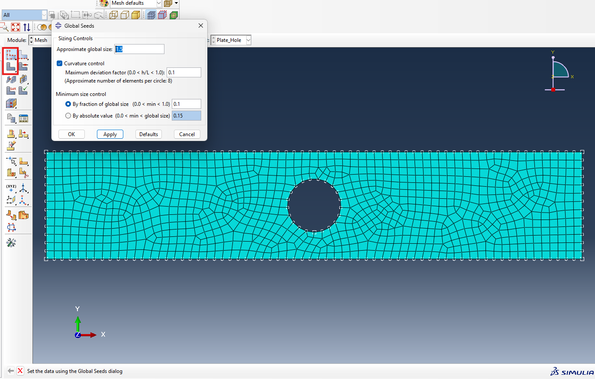
At this stage, you can perform several operations, such as assigning element types, changing the meshing scheme, or adjusting seed sizes. However, since this is just an introductory example, we’ll leave those for later sections.
The final step before running the simulation is to apply the boundary conditions.
Before doing so, take a look at the initial sketch and think about which boundary conditions make physical sense here.
But first, let’s create a step - this defines the simulation’s time frame. In Abaqus, analyses can generally be static or dynamic.
In a dynamic (explicit or implicit) simulation, the time variable represents real physical time.
In a static analysis, time is not physical but simply a loading parameter, indicating how loads are gradually applied.
For this example, we’ll perform a static analysis, the simplest type.
Create a new step by navigating to:
\[\text{Step} \; \rightarrow \; \text{Procedure type: General} \; \rightarrow \; \text{Static, General}\]and name it loading_step, as shown in Figure 15.
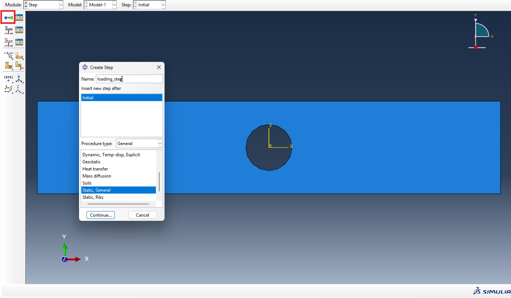
Now, we can define the boundary conditions.
According to the sketch, we want to apply a displacement on both sides of the plate.
Click the boundary condition icon (second row, first column) and select:
This applies a displacement of \(u_x = 1.5\) mm on both sides.
By default, U1 corresponds to the x-axis direction in the assembly.
On the left side, apply a negative displacement (−1.5 mm), and on the right side, apply a positive displacement (+1.5 mm) to simulate tension.
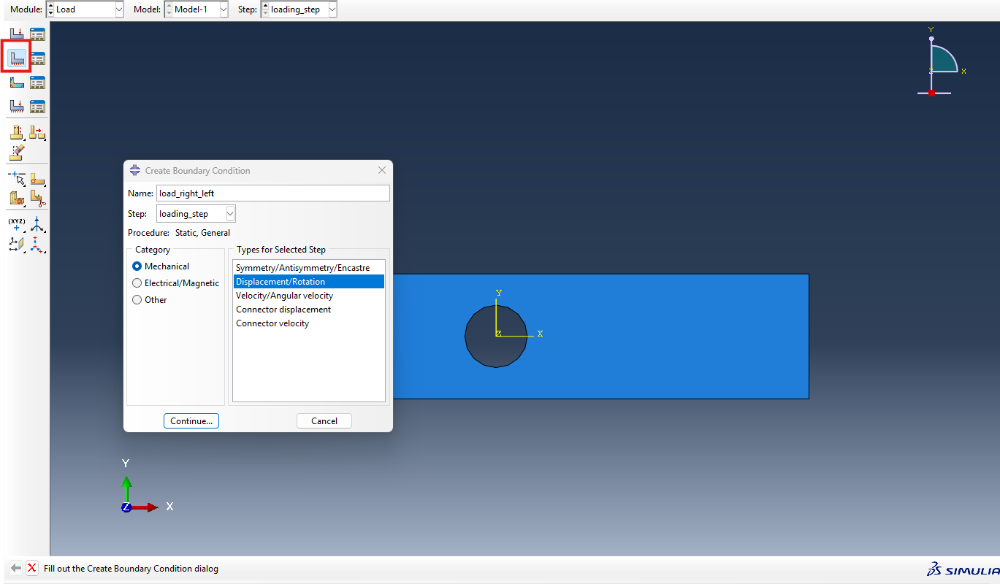
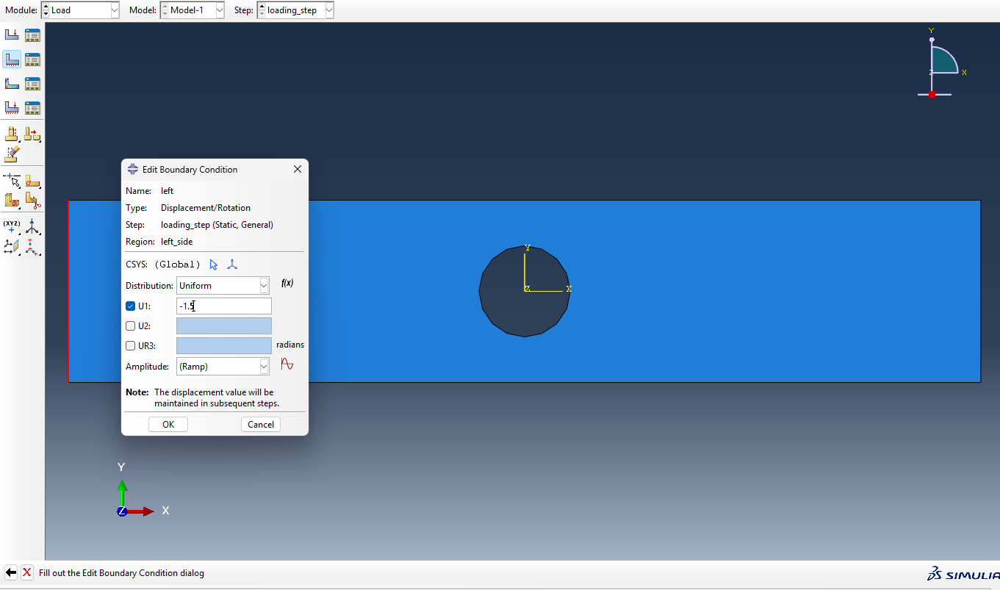
Now that the model is ready, let’s create and submit a job.
The job module is where we tell Abaqus to actually run the simulation we’ve set up.
plate_with_hole) and verify that it references your current model.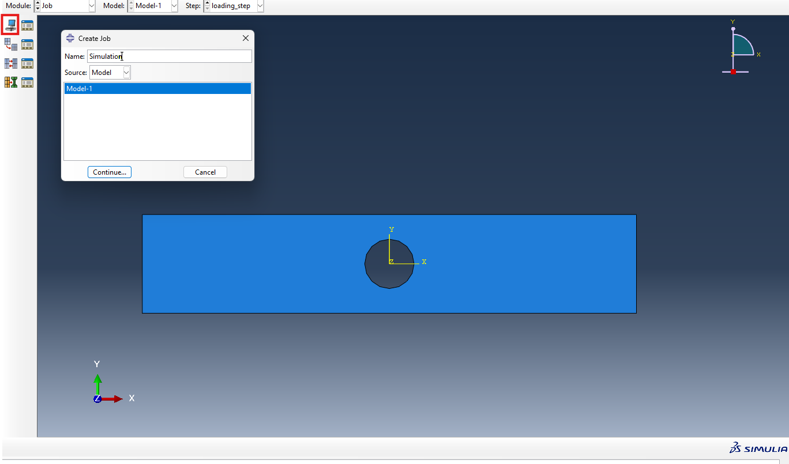
Once everything is ready, click Submit ▶️ to start the analysis. You can monitor its progress in the Job Monitor, which displays information such as completion status, warnings, and estimated time.
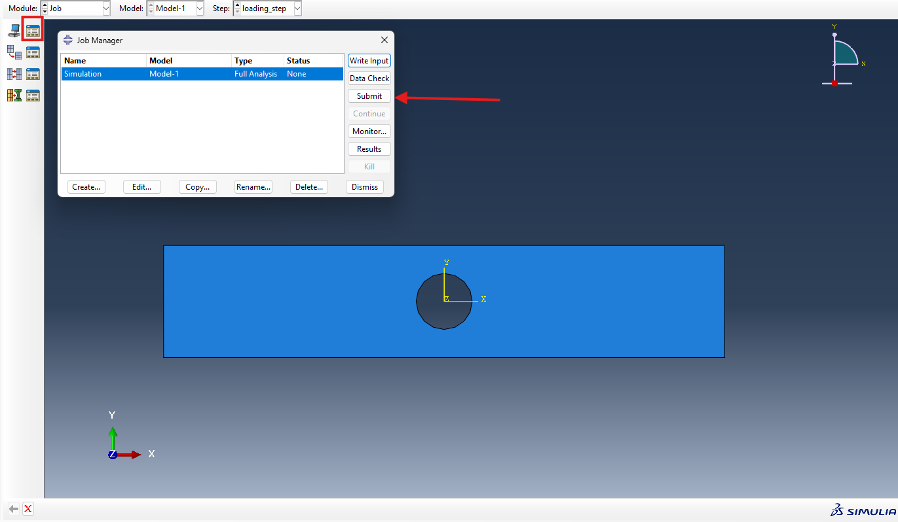
When the analysis finishes, open the Visualization module to check the results.
Figure 20 shows the von Mises stress contour for the plate under tension and the stress concentration around the hole is clearly visible, as expected.
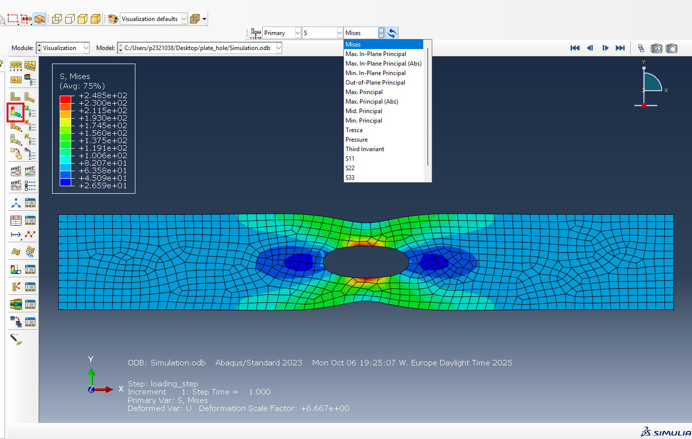